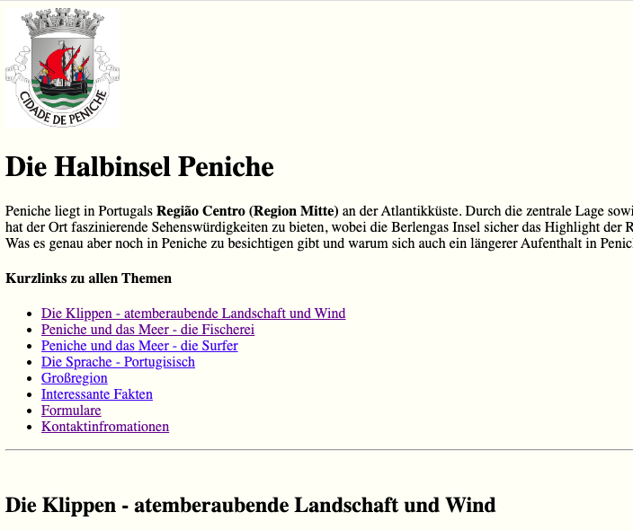

Was können wir bis jetzt noch nicht?
Was fehlt in HTML?

CSS - Cascading Style Sheets
Öffnen .... (Editor)
Inline ResultsAktuell


Die Halbinsel Peniche
Peniche liegt in Portugals Região Centro (Region Mitte) an der Atlantikküste. Durch die zentrale Lage sowie den ausgezeichneten Strände ist Peniche eine beliebte Destination bei Surfern. Aber auch für Nicht-Surfer hat der Ort faszinierende Sehenswürdigkeiten zu bieten, wobei die Berlengas Insel sicher das Highlight der Region ist.
Was es genau aber noch in Peniche zu besichtigen gibt und warum sich auch ein längerer Aufenthalt in Peniche lohnt erfährst Du in diesem Beitrag.
Mit etwas CSS
Die Halbinsel Peniche
Peniche liegt in Portugals Região Centro (Region Mitte) an der Atlantikküste. Durch die zentrale Lage sowie den ausgezeichneten Strände ist Peniche eine beliebte Destination bei Surfern. Aber auch für Nicht-Surfer hat der Ort faszinierende Sehenswürdigkeiten zu bieten, wobei die Berlengas Insel sicher das Highlight der Region ist.
Was es genau aber noch in Peniche zu besichtigen gibt und warum sich auch ein längerer Aufenthalt in Peniche lohnt erfährst Du in diesem Beitrag.
Mit etwas mehr CSS

Die Halbinsel Peniche
Peniche liegt in Portugals Região Centro (Region Mitte) an der Atlantikküste. Durch die zentrale Lage sowie den ausgezeichneten Strände ist Peniche eine beliebte Destination bei Surfern. Aber auch für Nicht-Surfer hat der Ort faszinierende Sehenswürdigkeiten zu bieten, wobei die Berlengas Insel sicher das Highlight der Region ist.
Was es genau aber noch in Peniche zu besichtigen gibt und warum sich auch ein längerer Aufenthalt in Peniche lohnt erfährst Du in diesem Beitrag.
Das geht auch übersichtlicher
-
Neue Datei mit der Endung
.cssanlegen.
Zum Beipsiel:suchDirEinenNamenAus.css
-
Verlinken im Header der HTML Datei
- CSS Code in der neuen Datei schreiben
Downloadlink der ZIP Datei
(Wie öffne ich ZIP Datein?)
Dann viel Spaß beim selbst ausprobieren ....
(verwendet gerne das Cheat Sheet mit den Erklärungen)